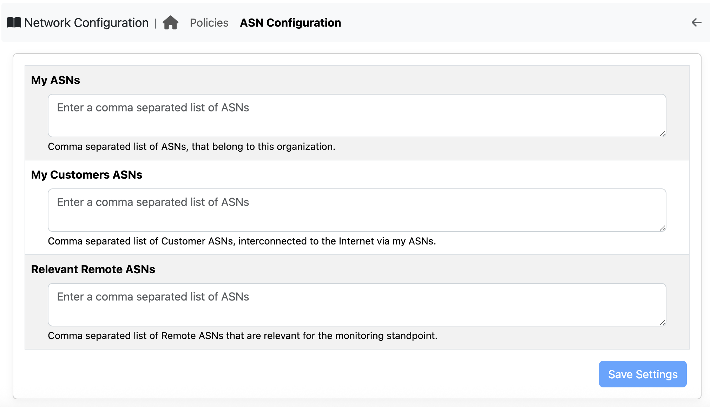
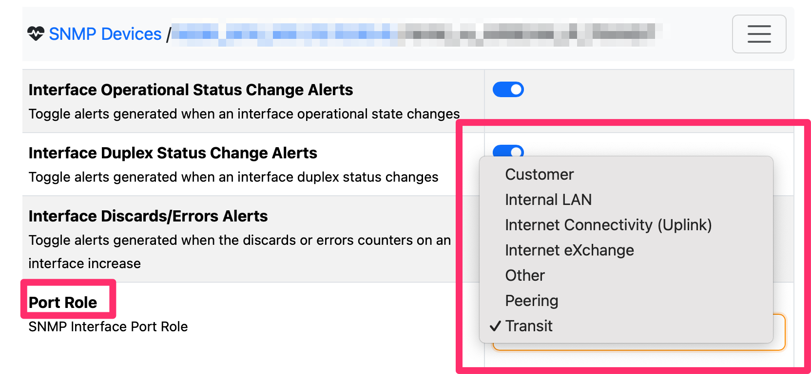
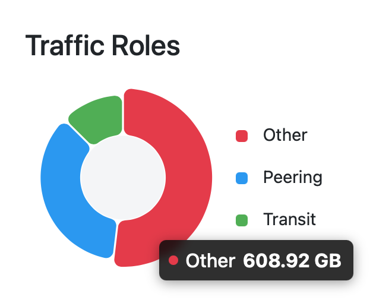

1. Конфигурация
Первым шагом является настройка списка ASN (номер автономной системы). Для этого перейдите на левую боковую панель и выберите «Политики», затем «Конфигурация сети» и на странице выберите «Конфигурация ASN».
1.1. Конфигурация АСН

Конфигурация АСН
На этой странице вам необходимо настроить список ASN, которые подходят для вашей работы. Формат представляет собой список чисел, разделенных запятой (CVS). В частности, вам необходимо указать:
Ваши ASN. Если вы крупная компания, вы зарегистрировали номер AS. Иногда компании имеют более одного ASN, и здесь необходимо указать их все. Это позволяет ntopng понять, что такое «домашний» ASN.
ASN вашего клиента. Укажите здесь список ASN клиентов, имеющих доступ в Интернет через вашу сеть. По сути, это клиенты, которые используют вашу компанию для доступа в Интернет. Этот список важен, поскольку он позволит ntopng понять, какая часть трафика генерируется вашей компанией, а какая часть создается вашими клиентами.
Соответствующие ASN. В этом списке вы указываете ASN, которые вы не контролируете (например, CDN или крупные компании, предоставляющие популярные сетевые услуги), но которые имеют отношение к вашему бизнесу. Эти ASN необходимо отслеживать, поскольку, если на них влияют проблемы с подключением, вы и ваши клиенты также могут оказать негативное влияние.
1.2. SNMP Конфигурация интерфейса

SNMP Роли интерфейса
Через SNMP, ntopng опрашивается информация интерфейса и статистика трафика. Помимо этой информации, пользователи могут указать роль интерфейса в сети. Это необходимо указать вручную, поскольку эта информация недоступна в SNMP MIB.

SNMP Конфигурация роли интерфейса
Тол интерфейса можно установить, щелкнув значок конфигурации (cog), который позволяет указать роль. Наиболее актуальными ролями являются пиринг, транзит и интернет-обмен. Вы также можете пакетно переименовать интерфейсы SNMP, начиная с ntopng, установив роль интерфейса на основе описания псевдонима интерфейса. Например, если интерфейс содержит слово «пиринг», его роль будет установлена на «пиринг».
Настройка роли интерфейса важна, поскольку на ее основе можно будет рассчитать разбивку ролей трафика, доступную, например, на странице отчетов.

Распределение ролевого трафика
1.3. Включить режим AS
Примечание
Это предпочтение видно, только если ntopng собирает потоки от интерфейсов ZMQ.
Если вы хотите просматривать трафик, ориентируясь в основном на представление трафика AS-to-AS, а не на представление трафика IP-IP, вам следует включить режим ASN. Вы можете сделать это, перейдя на левую боковую панель и выбрав «Настройки», а затем «Настройки».

Конфигурация режима AS
Идея режима AS заключается в том, чтобы сосредоточить внимание пользователя на AS. Включив его, вы сможете увидеть новый отчет, разработанный именно для этого варианта использования, а также немного изменить ntopng GUI, ориентируясь на AS, а не на IP-адреса.
Если у вас есть ASN, вам необходимо управлять рекламой маршрутизации, чтобы весь мир мог достичь вашей сети. Обычно это достигается с помощью протокола BGP (протокол пограничного шлюза). nProbe включает новую службу, предназначенную для обработки рекламы BGP и BMP (BGP Протокол мониторинга): дополнительную информацию об этом можно найти в руководстве nProbe. Демон, реализующий протокол BGP/BMP, называется bgp_сервер. В конфигурации ntopng необходимо указать IP-адрес, на котором активен сервер bgp_, и порт, на который сервер доставляет информацию о маршрутизации через протокол, совместимый с redis (параметр -r в bgp_server).
При необходимости, если вы настроили сервер bgp_server для отслеживания некоторых префиксов BGP (параметр -n в bgp_server), вам необходимо указать URL-адрес ZMQ, на который сервер bgp_ будет сообщать об изменениях префикса маршрутизации.